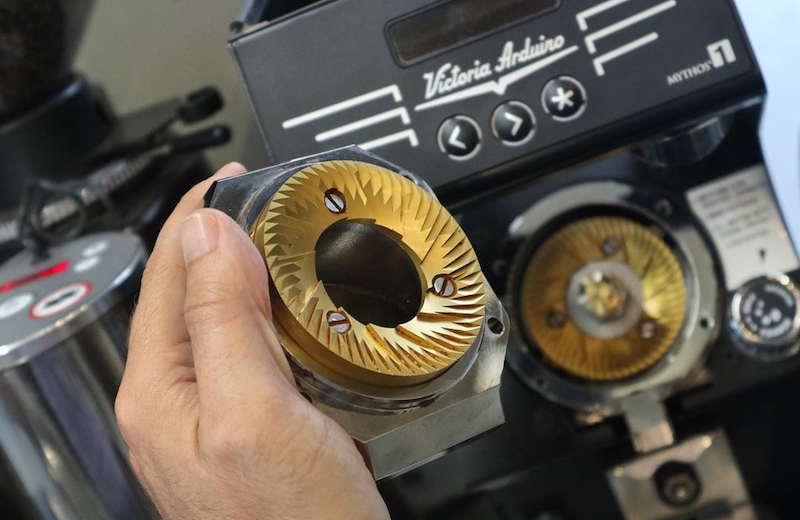

Lebih dari 100 teknisi tersertifikasi di 19 kota siap memastikan mesin Anda beroperasi pada performa optimal. Kami memahami bahwa setiap menit downtime berdampak langsung pada pendapatan dan pengalaman pelanggan Anda.

Dari instalasi awal hingga perawatan preventif berkala — tim kami menjamin performa mesin Anda terjaga sepanjang masa operasional.
Instalasi dilakukan oleh teknisi bersertifikat sesuai standar pabrikan, mencakup konfigurasi mesin, kalibrasi grinder, dan uji coba operasional menyeluruh sebelum diserahterimakan kepada Anda.
Program perawatan preventif untuk menjaga konsistensi hasil ekstraksi dan memperpanjang umur mesin. Kalibrasi suhu, tekanan, dan dosis dilakukan sesuai standar resmi prinsipal.
Garansi resmi dari prinsipal didukung ketersediaan suku cadang original di gudang Jakarta dan kota-kota utama, sehingga proses perbaikan tidak perlu menunggu impor.
Tim layanan pelanggan kami siap menerima laporan kendala tujuh hari dalam seminggu, dengan panduan troubleshooting via telepon atau video call untuk penanganan cepat tanpa harus menunggu kunjungan teknisi.
Program pelatihan terstruktur untuk operator dan barista — mulai dari pengoperasian dasar, teknik latte art, hingga pengembangan menu untuk kafe specialty - disesuaikan dengan kebutuhan Anda.
Seiring pertumbuhan bisnis Anda, tim kami siap memberikan konsultasi terkait peningkatan kapasitas mesin atau ekspansi ke lokasi baru — mencakup analisis kebutuhan dan proyeksi investasi.
Mesin dan peralatan adalah investasi besar dalam bisnis Anda — dan seperti investasi lainnya, keduanya layak mendapat perlindungan terbaik.
Program Perawatan Berkala (PMA) hadir untuk memastikan mesin Anda selalu dalam kondisi optimal, dengan kontrak tahunan yang memberikan ketenangan pikiran jangka panjang.
Karena kami tahu — setiap jam tanpa mesin adalah kerugian nyata bagi bisnis Anda.
Teknisi bersertifikat datang secara rutin setiap bulan untuk pemeriksaan, kalibrasi, dan pembersihan menyeluruh.
Setiap laporan kendala direspons cepat dengan jaminan perbaikan dalam waktu maksimal 24 jam kerja.
Jika masalah belum terselesaikan, kami siapkan mesin pengganti — agar operasional Anda tidak terganggu sedetik pun.
Selain mesin dan bahan baku, kami menyediakan keahlian dalam merancang menu minuman yang sesuai dengan konsep, target pasar, dan profitabilitas bisnis Anda — dari ideasi hingga implementasi standar resep.
Analisis konsep brand, target pasar, dan positioning kompetitif — diikuti formulasi resep signature beverage dengan SOP dan takaran presisi yang siap diterapkan oleh tim Anda.
Perhitungan HPP, margin, dan strategi penetapan harga jual yang sehat untuk setiap item menu.
Pengembangan menu musiman untuk menjaga daya tarik pelanggan sepanjang tahun.
Pelatihan tim agar setiap minuman disajikan dengan kualitas yang konsisten di setiap outlet.
Toffin menyediakan layanan purna jual menyeluruh, meliputi instalasi oleh teknisi bersertifikat, kalibrasi mesin, servis preventif melalui Preventive Maintenance Agreement (PMA), penggantian suku cadang original, klaim garansi, serta dukungan teknis onsite. Layanan ini didukung lebih dari 100 teknisi bersertifikat yang tersebar di 19 kota di Indonesia.
Layanan support Toffin difokuskan pada produk yang dibeli melalui jaringan resmi Toffin, agar kualitas servis, ketersediaan suku cadang original, dan garansi principal dapat terjamin sepenuhnya. Untuk mesin di luar brand yang didistribusikan Toffin, kami dapat menyediakan konsultasi dan merujuk ke teknisi yang tepat.
Setiap peralatan yang dibeli melalui Toffin diinstal oleh teknisi bersertifikat untuk memastikan mesin beroperasi optimal dan sesuai standar principal. Proses instalasi mencakup pemasangan, pengaturan awal, kalibrasi, serta panduan penggunaan dasar bagi tim Anda.
Tim teknisi kami berkomitmen merespons laporan masalah dalam waktu maksimal 24 jam untuk kota-kota utama (Jakarta, Semarang, Surabaya, Bali, Bandung, Medan dan Makassar), dan 48 jam untuk kota lainnya. Pelanggan PMA mendapatkan respons prioritas lebih cepat.
Untuk mesin yang masih dalam masa garansi, kunjungan teknisi tidak dikenakan biaya tambahan. Untuk mesin di luar garansi, berlaku biaya kunjungan dan diagnosa yang akan dikomunikasikan sebelum teknisi datang. Pelanggan PMA tidak dikenakan biaya kunjungan.
Toffin menyimpan stok suku cadang original untuk semua brand yang kami distribusikan.
Setiap mesin dan peralatan yang dibeli melalui Toffin Indonesia berhak mendapatkan garansi resmi yang berlaku di seluruh 19 kota layanan Toffin di Indonesia. Cukup hubungi hotline kami dan tim akan mengkoordinasikan teknisi terdekat untuk kunjungan garansi Anda.
Untuk mengajukan klaim garansi, hubungi tim support Toffin melalui WhatsApp di +62 811-9983-378 dengan menyertakan bukti pembelian serta informasi unit (tipe mesin dan keluhan). Tim akan memverifikasi cakupan garansi dan menjadwalkan pemeriksaan atau servis oleh teknisi. Klaim berlaku untuk produk yang dibeli melalui jaringan resmi Toffin.
Preventive Maintenance Agreement (PMA) adalah program perawatan berkala terjadwal untuk peralatan kopi Anda. Manfaatnya meliputi servis preventif rutin, kalibrasi, prioritas respons yang lebih cepat saat terjadi kendala, serta umur pakai mesin yang lebih panjang dan downtime operasional yang lebih minim — sehingga kualitas minuman tetap konsisten.
Untuk mendaftar PMA, hubungi tim Toffin melalui WhatsApp di +62 811-9983-378 atau email info@toffin.id. Tim akan menyesuaikan paket dengan jumlah dan jenis mesin Anda, lalu mengatur jadwal servis berkala. PMA tersedia untuk pelanggan di seluruh jaringan layanan Toffin di 19 kota.
Setelah instalasi, teknisi Toffin memberikan panduan penggunaan dan perawatan dasar agar tim Anda dapat mengoperasikan peralatan dengan benar dan aman. Untuk kebutuhan lebih lanjut, Toffin juga menyediakan program barista training dan pengembangan menu bersama tim Flavour Engineer Toffin
Jika peralatan mengalami kendala, hentikan penggunaan unit dan laporkan ke tim support Toffin melalui WhatsApp di +62 811-9983-378 atau email info@toffin.id, sertakan tipe mesin dan deskripsi masalah. Tim akan merespons dalam maksimal 24 jam untuk kota utama dan 48 jam untuk kota lainnya. Hindari perbaikan sendiri agar garansi tetap berlaku.
Hubungi hotline layanan kami atau ajukan tiket dukungan secara online.